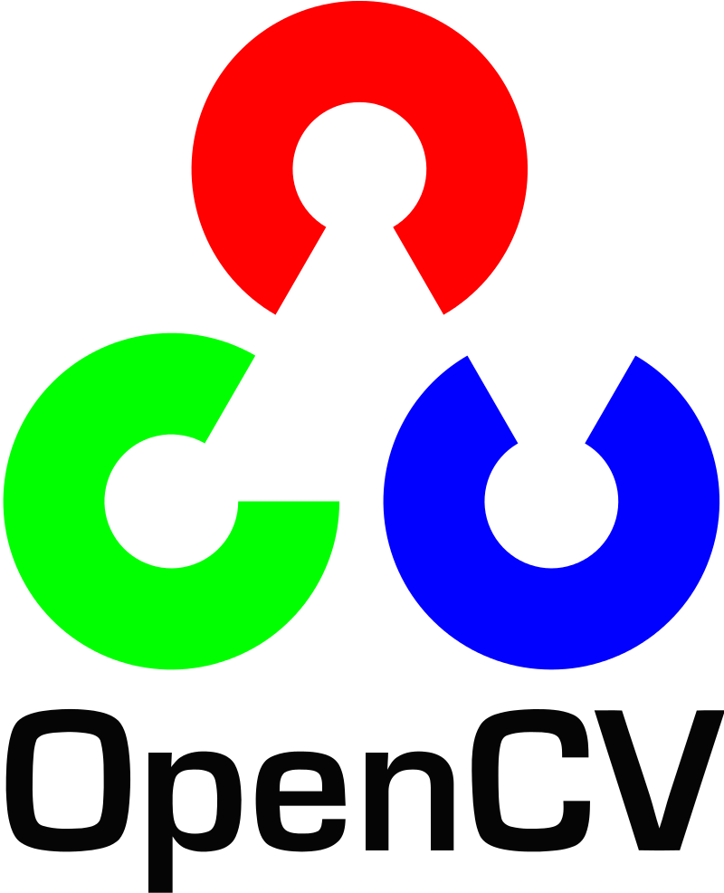
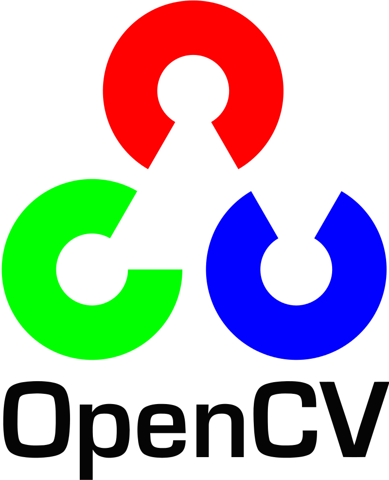

Arun Arunachalam Maheswaran
Email: arun.maheswaran96@gmail.com
[ Skills
| Education
| Work Experience
| Projects
| Honors & Awards
| Certifications
]
|
|
I'm Arun, graduate student at NC State University majoring in Integrated
Manufacturing Systems Engineering with 4+ years of professional experience in manufacturing quality and
operations data analysis. I am passionate about utilizing big data analytics, statistics, and operations research
to drive business insights and optimize processes.
With expertise in programming languages such as Python, R, Julia, C++, and SQL, as well as proficiency in various
software and cloud platforms including GBQ, Bash, VBA, Google Cloud Platform, Microsoft Azure, Apache Spark,
Apache Hadoop, Air Table, Tableau, Microsoft Office, and Visio, I possess the technical skills necessary to analyze complex
data and deliver actionable insights.
Additionally, my proficiency in Lean methodologies including 5S, Control Plan, FMEA, Problem Solving - DMAIC & PDCA,
Statistical Analysis, and Statistical Process Control enable me to identify inefficiencies and implement process improvements
to optimize operations using statistical tools such as SAS JMP and Minitab.
Few Keywords that might best describe my research interests.
Data Analysis, Data Engineering, Supply chain operations, Statistics, Machine Learning
|
Experience
-
Jul 2022 - Dec 2022
Boston, Massachusetts
Supply chain operation Analyst Co-op
Developed a mathematical model in Python to identify big and bulky products, and automated daily reporting of purchase order (PO) numbers for less-than-truckload (LTL) shipment using GBQ and Google Data Studio
Conducted a ROI assessment to improve network-wide cube utilization of Middle Mile trucks by 4.6% through procurement of 2ft e-tracks trailers and modular cages, projecting $1.1M net annual savings on transportation costs
Owned and maintained a dashboard using GBQ and Google Data Studio to track improvement in cube utilization of Middle Mile trucks and monitor their position in the supply chain network for reverse logistics
Analyzed the impact of PO auto-reschedule use cases on WBR metrics, prioritized new Tech deployment projects, and identified potential transportation and labor cost savings of $1.4M annually and a 9.5% reduction in delivery miss rate
Conducted ad-hoc data analysis using SQL to identify trends in transportation costs, resulting in a recommendation to shift to a different carrier for certain routes and saving $200k annually
Collaborated with Tech, Field Operations, Finance, and cross-functional stakeholders for deployment of TMS initiatives
Tech Stack: Python, GBQ, Google Data Studio, Google Cloud Platform, Github, Docker
-
Aug 2019 - Jun 2021
Pune, India
Engineering Manager - Manufacturing Quality
Reduced annual rework cost of $250k on Engine cylinder bore scoring issue by using DMAIC lean six sigma methodology.
Led team of 5 in maintaining the manufacturing process compliance over 95% for IATF 16949 standards by conducting process audits and Root Cause Analysis for corrective and preventive actions
Led PPAP verification process for approval of new manufacturing process for 3.3L engine cylinder heads, ensuring compliance with IATF and WCQ standards and performed Value Stream Mapping (VSM) for cylinder head sub-assembly
Collaborated with Cross-Functional Teams in evaluating and implementing 6 Poka-Yoke and Zero-Defect manufacturing stations and contained 90% of the non-conformities in 3.3L and 5L engine assembly lines
Achieved 16% cost reduction in Vehicle wiring harness by Value Engineering the routing length based on 2D part drawings
Developed Tracking and Traceability system using MS Excel for over 4800 parts across 5 plants to facilitate vehicle recall
Led FMEA analysis for BS6 process changes and trained 15+ operators on Critical-to-Quality operations in the Engine assembly line
Tech Stack: Python, Power BI, Microsoft Excel, Microsoft Office 365, AutoCAD.
-
Aug 2018 - Jul 2019
Bangalore, India
Graduate Engineer Trainee - Associate
Utilized SQL queries to revamp large datasets of commercial vehicle sales data spanning 10 years, segmented by application and demographics, to extract insights for stakeholders
Implemented a predictive model to formulate Beat plans for Sales Executives, leading to a 12% increase in customer visibility and a 6% increase in market share for the Light Commercial Vehicle segment in Karnataka state
Analyzed potential drop-off reasons to improve the sales win ratio by 7% and provided insights to stakeholders for effective decision-making
Created visualizations using Tableau to estimate market size and developed application-wise propensity lists for various micro-markets
Developed a dashboard in MS Excel to track region-wise KPIs, weekly metrics, and performance of new business initiatives of Commercial Vehicle dealerships
Trained 80 Sales Executives to generate daily Beat plans and record drop-off reasons in a CRM tool for real-time support from stakeholders
Conducted region-wise dipstick surveys to identify prospective customers' needs and benchmarked competitor services, leading to the deployment of new value-added services as a pivotal selling tool
Tech Stack: Microsoft Excel, VBA, MySQL, Microsoft PowerBI
-
Jun 2016 - May 2017
Coimbatore, India
Chief Design Engineer
Led cross-functional design team of 20 members from vehicle dynamics, chassis and, powertrain and secured 6th position in the National level Student’s electric formula car development competition “Formula Green”
Functioned as student advisor of the team and conducted training programs on fundamentals of vehicle dynamics
Engineered geometry of brake rotor and increased the convective heat dissipation by 32% using SolidWorks and ANSYS workbench
Performed CFD Analysis using ANSYS workbench and optimized the chassis body to evince minimum drag force
Tech Stack: MATLAB, AutoCAD, Ansys Workbench, SolidWorks
|

|
North Carolina State University
Masters in Integrated Manufacturing Systems Engineering
2021 - 2023
GPA : 3.97 / 4.0
|

|
PSG Institute of Technology and Applied Research
B.E - Mechanical Engineering
2014 - 2018
|
|
|
AMES Housing Price Prediction
- Conducted exploratory data analysis on a dataset of 87 variables to identify correlations between predictor variables and the response variable,
housing prices, using techniques such as correlation plots
- Employed various regression techniques including complete linear regression, reduced linear regression, regularized regression (lasso and ridge),
k-fold cross-validation, best subset selection, and regression trees to develop predictive models for housing prices with R squared value of 91% with just 20% of the predictor variables

This project involved performing exploratory data analysis on a dataset with 87 variables to identify correlations between predictor variables and the response
variable, housing prices. Various regression techniques were employed, including complete linear regression, reduced linear regression, regularized regression (lasso and ridge),
k-fold cross-validation, best subset selection, and regression trees to develop predictive models for housing prices. Diagnostic checks were conducted to ensure the
validity of the models and assess their performance, and hyperparameters were optimized to improve their accuracy, precision, and generalizability.
The performance of each model was evaluated using metrics such as root mean squared error (RMSE), and the best-performing model was selected. Statistical tests were conducted to assess the significance
of predictor variables in predicting housing prices and identify the variables that have the greatest impact on the response variable. Techniques such as forward and backward
stepwise selection, regression trees with bagging, and gradient boosting were employed to improve the accuracy and stability of the models. The results of the analysis were
effectively communicated through visualizations, written summaries, and presentations to stakeholders.
|

|
Real-Time Data Streaming Architecture for Industrial Automation System
- Developed color detection model using Python OpenCV and established conveyor control using MachineMotion API
- Enabled real-time data streaming in MQTT & Modbus TCP/IP Publish-Subscribe protocol using Node-Red for control logics
and integration of conveyor, Universal Robot, Epic Groov Smart PLC and local computer
- Built a browser-based interface using Groov View Dashboard to visualize the automation system metrics

 

The recent advancements and evolution of Manufacturing in the fourth Industrial Revolution has resulted in adoption of newer
technologies that surround the Smart Manufacturing space. The Industrial Internet of Things takes networked sensors, intelligent
devices and puts those technologies directly into the manufacturing floor, collecting data to drive artificial intelligence and
predictive analytics. While more interconnected Systems, IIoT has resulted in more and more complexity with multiple system components
that are present across the process.
With more sophistication in Process Control, Automation, Data Transfer and Handling, there is a
growing need for an Automation System that simplifies the process and at the same time ensures a secure Industrial communication and
efficient data handling and control in real-time. We look at a possible solution to this challenge by exploring the Edge Programmable
Industrial Controller (Groov EPIC) from Opto 22 which addresses the challenges of Complexity, Security & Cost by connecting directly to
field devices, control systems, databases & cloud services.
We demonstrate the Application of the Smart PLC in a Material Handling Automation
System involving a conveyor belt and a universal robot. The Smart PLC controls the material handling process by detecting the characteristics
of a part, sorting it based on color, constructing efficient data flow and control using Node-RED and MQTT and building a live dashboard
indicating the status of the operation and enabling remote control of the system with real-time alerts. An automation system is enabled
using the Groov EPIC, without the need for multiple system components in this process and thereby flattening the IIoT architecture.
|
|
|
Design of Experiments (DOE) - Optical fiber drawing process
- Designed and analyzed a 2k-n fractional factorial experiment using SAS JMP, resulting in a 43% reduction in signal attenuation through the application of ANOVA and response surface analysis
- Utilized desirability function curve and response surface analysis to identify the optimal settings for fiber drawing process, achieving a 29% reduction in signal attenuation

A manufacturer of an optical fiber company wants to test a new design before introducing it to the market.
One of the most important characteristics of fiber is optical signal attenuation, and our aim here is to build a
prediction model to determine the best combination of settings that minimize the signal attenuation. This can be achieved
by running a series of carefully designed experiments to get the significant factors that affect signal attenuation.
The department allocated a budget of $100,000 to conduct the experiments with each run costing $1000. In total, 58 runs of
the experiment amounting to $58000 were conducted for our project.
|
|
|
Agent-based modeling of Warehouse Order-pick Sequencing
- Developed an auction-based communication system utilizing virtual currency to optimize order-pick sequencing
for warehouse robots using Julia agents.jl framework
|
|
|
Time series analysis of retail stores data
-
Performed time series analysis of retail stores’ sales data to forecast the sales for future days using ARIMA model
-
Built a dashboard using Plotly Dash to visualize the trend of sales and display the metrics of sales data


|
Honors and Awards
- Top Performer Award (2020): Recognition from Tata Motors for driving execution in developing Track and Trace system for ILCV and MCV parts and sub-assemblies
- Top Cost Saving Project (2022): Recognition from Wayfair for performing the analytics work for 2ft e-tracks project
|
MOOCs/Certifications
- University of Amsterdam, Coursera
- IBM, Coursera
- DeepLearning.Ai, Coursera
Deep Learning Specialization (5 courses) [In Progress]
- HackerRank
- Problem Solving
- Python
- SQL
|
|